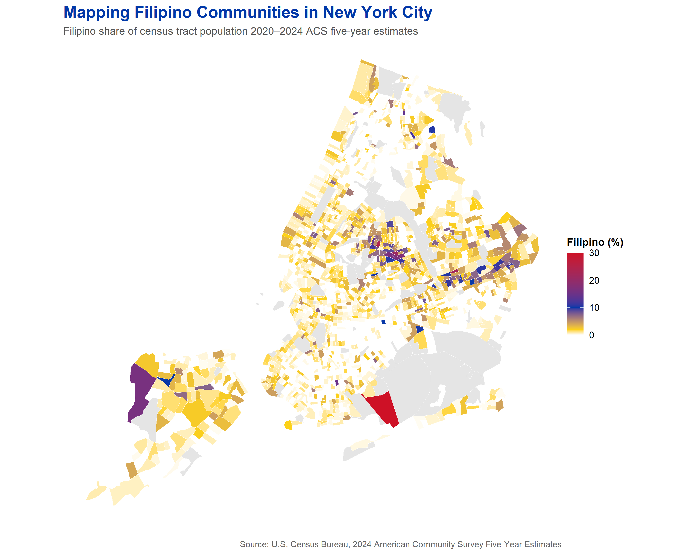
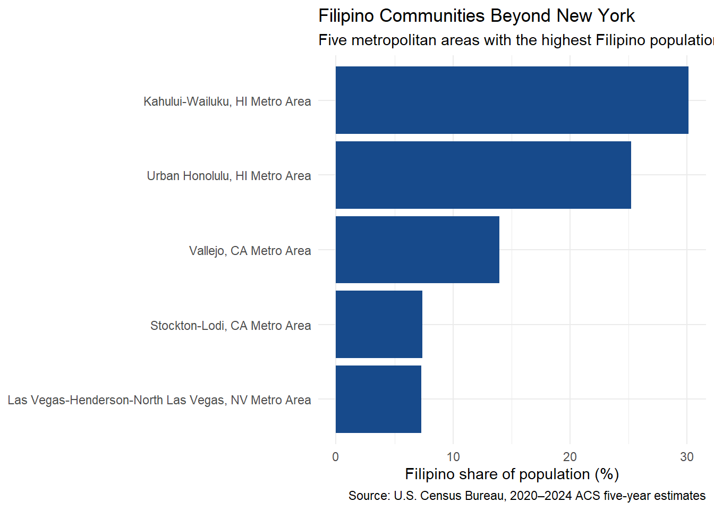
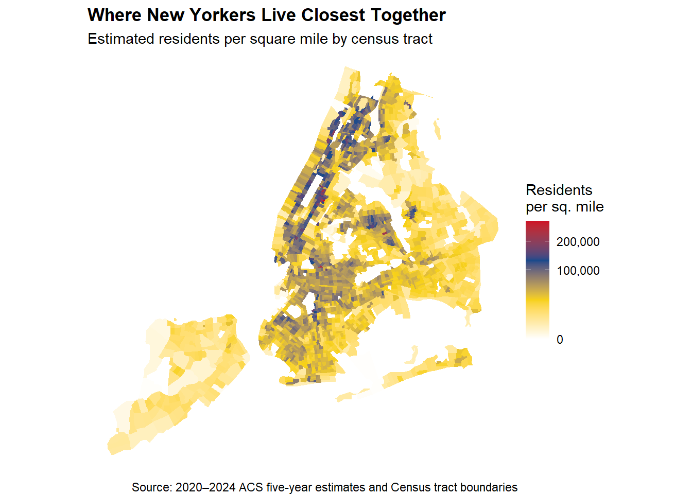
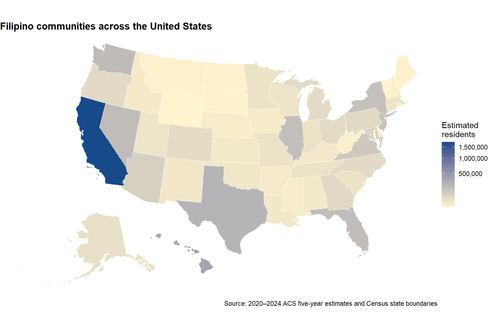

Filipinos are sometimes called “the Latinos of Asia.” After more than 300 years of Spanish rule, the United States snatched up the Philippines in 1898. In less than 50 years of American rule, English had become widely used across the islands. That legacy can turn up in the middle of an ordinary American day. The nurse explaining your discharge instructions may have trained in Manila, and the person helping you reset your password may be taking your call from Cebu. Library of Congress
By 1970s, many English speaking Filipino nurses were recruited by New York hospitals, and this community created Little Manila in Woodside, Queens. As someone born in the Philippines, I see Woodside as part of a story that also runs through Hawaii’s sugar plantations and California’s farm towns. New York City Council
In Welcomed by the New Colossus: An Atlas of American Communities, I use Census estimates to map where Filipino communities have taken root in New York and across the country. In the five boroughs, I use the city’s PLUTO property records to explore where New Yorkers live and work, and how much space they have.
Data Acquisition and Preparation
Task 1: Data Acquisition - CBSA Population Breakdown
I compare the number and share of Filipino residents in U.S. metropolitan areas using Census estimates. The downloaded files are saved in data/mp03.
Task 1A: Acquire 2020–2024 ACS Five-Year Population Data
The published 2025 ACS one-year B02018 table has no metropolitan-area rows. I use the 2020–2024 ACS five-year estimates for the metro comparison and for the city, state, and national estimates in Task 6. Here, Filipino includes residents who identified as Filipino alone or in combination.
Task 1B: Calculate Filipino Population Percentages
The Filipino population estimate is divided by the total population estimate to calculate the percentage of Filipino residents in each metropolitan area.
Task 1C: Metropolitan Areas With the Largest Filipino Populations
The following table identifies the ten metropolitan areas with the largest estimated Filipino populations.
Show the code
cbsa_population |>arrange(desc(filipino_population)) |>slice_head(n =10) |>select(Metropolitan_Area = NAME,Filipino_Population = filipino_population,Total_Population = total_population,Filipino_Percentage = filipino_percentage ) |>mutate(Filipino_Percentage =round(Filipino_Percentage, 2) ) |> knitr::kable(caption ="Ten Metropolitan Areas With the Largest Filipino Populations, 2020–2024 ACS five-year estimates" )
Ten Metropolitan Areas With the Largest Filipino Populations, 2020–2024 ACS five-year estimates
Metropolitan_Area
Filipino_Population
Total_Population
Filipino_Percentage
Los Angeles-Long Beach-Anaheim, CA Metro Area
540071
12974487
4.16
San Francisco-Oakland-Fremont, CA Metro Area
320533
4645029
6.90
New York-Newark-Jersey City, NY-NJ Metro Area
261843
19798537
1.32
Urban Honolulu, HI Metro Area
252603
1001146
25.23
San Diego-Chula Vista-Carlsbad, CA Metro Area
203548
3288774
6.19
Las Vegas-Henderson-North Las Vegas, NV Metro Area
169656
2329548
7.28
Chicago-Naperville-Elgin, IL-IN Metro Area
164964
9371595
1.76
Riverside-San Bernardino-Ontario, CA Metro Area
158756
4675704
3.40
Seattle-Tacoma-Bellevue, WA Metro Area
142855
4061920
3.52
Sacramento-Roseville-Folsom, CA Metro Area
105516
2426388
4.35
Task 1D: Data Interpretation
The table ranks metropolitan areas by the estimated number of Filipino residents. Question 4 ranks them by share of the local population. A metro area can rank highly by share even when its Filipino population is smaller in absolute terms.
Task 2: Data Acquisition - Filipino Population Breakdown in NYC
I use 2020–2024 ACS estimates and census tract boundaries to map Filipino communities across the five boroughs. Tracts show variations that a citywide average would obscure.
Task 2A: Acquire Census Tract Data
Show the code
library(tidycensus)library(dplyr)library(sf)# Cache downloaded geographic boundary filesoptions(tigris_use_cache =TRUE)# Create the data directory if neededdir.create("data/mp03",recursive =TRUE,showWarnings =FALSE)# Save spatial data in a GeoPackagecache_file <-"data/mp03/nyc_tracts_2024.gpkg"# ACS variablesacs_variables <-c(total_population ="B01003_001",filipino_population ="B02018_012")# NYC counties (five boroughs)nyc_counties <-c("Bronx","Kings","New York","Queens","Richmond")# Check for existing cached dataif (file.exists(cache_file)) {message("Loading saved NYC Census tract data.") nyc_tracts <- sf::st_read( cache_file,quiet =TRUE )} else {message("Downloading ACS-5 Census tract data.") nyc_tracts <- tidycensus::get_acs(geography ="tract",variables = acs_variables,state ="NY",county = nyc_counties,year =2024,survey ="acs5",geometry =TRUE,output ="wide" )# Save the data and geographic boundaries sf::st_write( nyc_tracts, cache_file,delete_dsn =TRUE,quiet =TRUE )message("Census tract data saved successfully.")}# Confirm the number of census tractsnrow(nyc_tracts)
[1] 2327
Task 2B: Clean and Prepare Population Data
The ACS estimates are converted into numeric population values. The Filipino population percentage is calculated for each census tract.
Task 2C: Visualize Filipino Population Concentration
A tract map divides the city into small areas called census tracts. This map shows where Filipino residents make up a larger share of the local population. A patch marked 30% means about 3 in 10 residents of that tract identified as Filipino, alone or in combination. The palette draws on the Philippine flag.
Show the code
library(ggplot2)library(scales)# Create a map of Filipino population concentrationggplot(nyc_tracts) +geom_sf(aes(fill = filipino_percentage),color ="white",linewidth =0.05 ) +# Philippine flag-inspired color scalescale_fill_gradientn(colours =c("#FFFFFF", # White: lowest concentration"#FCD116", # Yellow: lower concentration"#0038A8", # Blue: moderate concentration"#CE1126"# Red: highest concentration ),values = scales::rescale(c(0, 2, 10, 30) ),limits =c(0, 30),oob = scales::squish,na.value ="#E5E5E5",name ="Filipino (%)" ) +labs(title ="Mapping Filipino Communities in New York City",subtitle =paste("Filipino share of census tract population","2020–2024 ACS five-year estimates" ),caption =paste("Source: U.S. Census Bureau,","2024 American Community Survey Five-Year Estimates" ) ) +coord_sf(datum =NA) +theme_void(base_size =12) +theme(plot.title =element_text(color ="#0038A8",size =17,face ="bold" ),plot.subtitle =element_text(color ="#555555",size =11 ),plot.caption =element_text(color ="#666666",size =9 ),legend.position ="right",legend.title =element_text(size =11,face ="bold" ),legend.text =element_text(size =10 ),plot.background =element_rect(fill ="white",color =NA ) )

Task 2D: Initial Interpretation
Read the colors against the legend. Gray marks tracts without a usable estimate. A tract can have a high Filipino share even if it has relatively few Filipino residents.
Task 3: Data Acquisition - NYC Neighborhood Tabulation Areas
Task 3A: Download and Load NYC NTA Boundaries
I use the city’s 2020 Neighborhood Tabulation Areas (NTAs) to summarize census tract estimates at a neighborhood scale.
Show the code
library(sf)library(dplyr)load_nyc_nta <-function() { data_dir <-"data/mp03"dir.create(data_dir, recursive =TRUE, showWarnings =FALSE) zip_file <-file.path(data_dir, "nynta2020.zip") extract_dir <-file.path(data_dir, "nynta2020") geojson_file <-file.path(data_dir, "nynta2020.geojson")# First, reuse the existing ZIP file when availableif (file.exists(zip_file)) {dir.create(extract_dir, recursive =TRUE,showWarnings =FALSE) shp_files <-list.files( extract_dir,pattern ="\\.shp$",recursive =TRUE,full.names =TRUE )if (length(shp_files) ==0) {unzip(zip_file, exdir = extract_dir) shp_files <-list.files( extract_dir,pattern ="\\.shp$",recursive =TRUE,full.names =TRUE ) }if (length(shp_files) ==0) {stop("No shapefile found in the NTA ZIP.") } nta <-st_read(shp_files[1], quiet =TRUE) } else {# Automatically download official NYC Open Data# GeoJSON when the local shapefile is missing nta_url <-paste0("https://data.cityofnewyork.us/api/v3/views/","9nt8-h7nd/query.geojson?accessType=DOWNLOAD" )if (!file.exists(geojson_file)) {download.file( nta_url,destfile = geojson_file,mode ="wb" ) } nta <-st_read(geojson_file, quiet =TRUE) }# Standardize column namesnames(nta) <-tolower(names(nta))# Keep the fields needed for our analysis nta <- nta |>select( nta2020, ntaname, boroname, ntatype, geometry )return(nta)}nyc_nta <-load_nyc_nta()cat("NYC NTAs loaded:", nrow(nyc_nta), "\n")
Task 3B: Aggregating Census Tract Data to NYC Neighborhoods
I assign each census tract to the NTA it overlaps most, then add up the estimates for the assigned tracts. A tract that crosses an NTA boundary is counted in a single neighborhood.
Show the code
library(sf)library(dplyr)# Ensure both datasets use the same coordinate systemnyc_nta <-st_transform( nyc_nta,st_crs(nyc_tracts))# Assign each census tract to its largest-overlap NTAtract_nta <-st_join( nyc_tracts |>select( GEOID, total_population, filipino_population ), nyc_nta |>select(nta2020),largest =TRUE,left =TRUE)# Aggregate population estimates by NTAnta_totals <- tract_nta |>st_drop_geometry() |>filter(!is.na(nta2020)) |>group_by(nta2020) |>summarise(total_population =sum( total_population,na.rm =TRUE ),filipino_population =sum(filipino_population),tract_count =n(),.groups ="drop" ) |>mutate(filipino_percentage =if_else( total_population >0,100* filipino_population / total_population,NA_real_ ) )# Reconnect neighborhood boundariesnta_filipino <- nyc_nta |>left_join( nta_totals,by ="nta2020" )# Display the top 10 neighborhoodsnta_filipino |>st_drop_geometry() |>filter(!is.na(filipino_population)) |>arrange(desc(filipino_population)) |>select( ntaname, boroname, filipino_population, total_population, filipino_percentage ) |>head(10) |> knitr::kable(digits =2,caption ="Top 10 NYC Neighborhoods by Filipino Population" )
Top 10 NYC Neighborhoods by Filipino Population
ntaname
boroname
filipino_population
total_population
filipino_percentage
Elmhurst
Queens
7456
100015
7.45
Woodside
Queens
3766
46947
8.02
Jamaica Hills-Briarwood
Queens
2130
37121
5.74
Jackson Heights
Queens
2073
93975
2.21
Queens Village
Queens
2072
55339
3.74
Forest Hills
Queens
1855
93621
1.98
Sunnyside
Queens
1584
46879
3.38
Astoria (Central)
Queens
1346
48044
2.80
Upper West Side-Lincoln Square
Manhattan
1233
69909
1.76
Maspeth
Queens
1201
40680
2.95
Task 3C: Validate Neighborhood Population Estimates
I compare the tract counts before and after the geographic match and count how many tracts were left unmatched.
Show the code
cat("Original census tracts:",nrow(nyc_tracts), "\n")
Original census tracts: 2327
Show the code
cat("Tracts after spatial join:",nrow(tract_nta), "\n")
Tracts after spatial join: 2327
Show the code
cat("Unique census tracts:",n_distinct(tract_nta$GEOID), "\n")
Unique census tracts: 2327
Show the code
cat("Tracts without an NTA:",sum(is.na(tract_nta$nta2020)), "\n")
Tracts without an NTA: 3
Show the code
cat("NTAs with population estimates:",sum(!is.na(nta_filipino$total_population)),"\n")
NTAs with population estimates: 261
Initial Findings: Filipino Communities in NYC
The table above shows which NTAs have the largest estimated Filipino populations. Counts and population shares describe different aspects of settlement. The tract-to-NTA assignment uses largest overlap, so the neighborhood estimates are approximate.
Initial Findings: Filipino Communities in NYC
The table shows the neighborhoods with the highest estimated Filipino share of their population. The counts alongside each percentage show how many residents the estimate represents.
NYC Neighborhoods With the Highest Estimated Filipino Population Shares
Neighborhood
Borough
Estimated Filipino Residents
Estimated Total Residents
Filipino Share (%)
Barren Island-Floyd Bennett Field
Brooklyn
5
14
35.71
Woodside
Queens
3766
46947
8.02
Elmhurst
Queens
7456
100015
7.45
Jamaica Hills-Briarwood
Queens
2130
37121
5.74
Alley Pond Park
Queens
5
92
5.43
Fort Hamilton
Brooklyn
43
980
4.39
Jamaica Estates-Holliswood
Queens
984
23270
4.23
Bellerose
Queens
1031
26891
3.83
Queens Village
Queens
2072
55339
3.74
Rego Park
Queens
1105
29744
3.72
Task 4: Aggregate Tract Data to the NTA Level
Task 4A: Reconnect Population Estimates to NTA Geometry
I attach the population estimates to the neighborhood boundaries for mapping. An NTA’s Filipino estimate remains missing if any assigned tract lacks that estimate.
Show the code
library(sf)library(dplyr)# Confirm the neighborhood dataset contains geometrystopifnot(inherits(nta_filipino, "sf"))# Save the combined geographic datasetst_write( nta_filipino,"data/mp03/nyc_nta_filipino_2024.gpkg",delete_dsn =TRUE,quiet =TRUE)# Preview Queens neighborhoods by estimated Filipino populationnta_filipino |> sf::st_drop_geometry() |> dplyr::filter(boroname =="Queens", !is.na(filipino_population)) |> dplyr::arrange(dplyr::desc(filipino_population), ntaname) |> dplyr::select( ntaname, boroname, total_population, filipino_population, filipino_percentage ) |>head(10) |> knitr::kable(digits =2,caption ="Queens Neighborhoods With the Largest Estimated Filipino Populations" )
Queens Neighborhoods With the Largest Estimated Filipino Populations
ntaname
boroname
total_population
filipino_population
filipino_percentage
Elmhurst
Queens
100015
7456
7.45
Woodside
Queens
46947
3766
8.02
Jamaica Hills-Briarwood
Queens
37121
2130
5.74
Jackson Heights
Queens
93975
2073
2.21
Queens Village
Queens
55339
2072
3.74
Forest Hills
Queens
93621
1855
1.98
Sunnyside
Queens
46879
1584
3.38
Astoria (Central)
Queens
48044
1346
2.80
Maspeth
Queens
40680
1201
2.95
Jamaica
Queens
56742
1156
2.04
Task 4B: NYC PLUTO Data Acquisition Using the Open Data API
The city’s Primary Land Use Tax Lot Output (PLUTO) records describe individual tax lots. I downloaded the first 100,000 records in batches of 10,000 and the rest in batches of 500. The code saves each batch locally and retries temporary failures.
A reusable function loads the combined PLUTO file when it is available. Otherwise, it assembles the saved batches, downloads any missing ones and writes the combined CSV.
Show the code
library(httr2)library(readr)library(dplyr)download_pluto <-function(output_file ="data/mp03/pluto_complete.csv",batch_dir ="data/mp03/pluto_batches",total_records =858284) {dir.create(dirname(output_file),recursive =TRUE, showWarnings =FALSE)dir.create(batch_dir,recursive =TRUE, showWarnings =FALSE)# 1. Use the combined CSV if already availableif (file.exists(output_file)) {cat("Using cached PLUTO CSV.\n")return(readr::read_csv( output_file,col_types = readr::cols(.default ="c"),show_col_types =FALSE )) } base_url <-paste0("https://data.cityofnewyork.us/resource/","64uk-42ks.csv" )# 2. Reuse the previously downloaded 10,000-row batches# and 500-row batches. Download only missing batches. large_offsets <-seq(0, 90000, by =10000) small_offsets <-seq(100000, total_records -1,by =500 ) batch_plan <-data.frame(offset =c(large_offsets, small_offsets),limit =c(rep(10000, length(large_offsets)),rep(500, length(small_offsets)) ) ) batch_plan$file <-c(file.path( batch_dir,sprintf("pluto_batch_%04d.csv", 1:10) ),file.path( batch_dir,sprintf("pluto_small_offset_%09d.csv", small_offsets ) ) ) batch_data <-vector("list",nrow(batch_plan) )for (i inseq_len(nrow(batch_plan))) { offset <- batch_plan$offset[i] limit <- batch_plan$limit[i] filename <- batch_plan$file[i] expected_rows <-min( limit, total_records - offset )# Try the local batch first data <-NULLif (file.exists(filename)) { data <-tryCatch( readr::read_csv( filename,col_types = readr::cols(.default ="c"),show_col_types =FALSE,progress =FALSE ),error =function(e) NULL )if (!is.null(data) &&nrow(data) != expected_rows) { data <-NULL } }# Download only if the cached batch is unavailableif (is.null(data)) { success <-FALSEfor (attempt in1:5) {tryCatch({ response <- httr2::request(base_url) |> httr2::req_url_query(`$limit`= limit,`$offset`= offset,`$order`=":id" ) |> httr2::req_timeout(120) |> httr2::req_perform() temp_file <-paste0(filename, ".tmp")writeBin( httr2::resp_body_raw(response), temp_file ) data <- readr::read_csv( temp_file,col_types = readr::cols(.default ="c"),show_col_types =FALSE,progress =FALSE )if (nrow(data) != expected_rows) {stop("Incomplete API response.") }if (file.exists(filename)) {file.remove(filename) }if (!file.rename(temp_file, filename)) {stop("Unable to save downloaded batch.") } success <-TRUE }, error =function(e) {cat("Attempt", attempt,"failed at offset", offset,":", conditionMessage(e), "\n" ) })if (success) breakSys.sleep(5* attempt) }if (!success) {stop("Download stopped at offset ", offset,". Cached batches are preserved." ) }Sys.sleep(0.5) } batch_data[[i]] <- data }# 3. Combine all batches using bind_rows() pluto <- dplyr::bind_rows(batch_data)if (nrow(pluto) != total_records) {stop("Combined PLUTO row count is incorrect.") }# Validate property identifiersif ("bbl"%in%names(pluto)) {if (anyNA(pluto$bbl) ||any(pluto$bbl =="") ||anyDuplicated(pluto$bbl) >0) {stop("Missing or duplicate BBL identifiers.") } }# 4. Save as CSV readr::write_csv(pluto, output_file)cat("PLUTO CSV saved:", output_file, "\n")return(pluto)}# Run the functionpluto <-download_pluto()
Mapping New York: Where People Live, Work and Build
A neighborhood takes shape around the places people live and the places they go to work. Here I bring Census population estimates and PLUTO property records together to see how housing, offices and residents are distributed across New York City.
Question 1: Where Is New York City’s Office Space Most Concentrated?
I added up the office floor area reported in PLUTO for each 2020 census tract. The calculation treats missing office-area values as zero.
Show the code
office_ranking <- pluto_eda |>filter(!is.na(tract_geoid)) |>group_by(bct2020, tract_geoid) |>summarise(office_sqft =sum(coalesce(officearea, 0)),.groups ="drop" ) |>arrange(desc(office_sqft))office_ranking |>slice_head(n =5) |>mutate(office_sqft =comma(office_sqft)) |>kable(col.names =c("Borough-Census Tract","Census GEOID","Office Area (sq. ft.)" ),caption ="Five NYC Tracts With the Most Office Space" )
Five NYC Tracts With the Most Office Space
Borough-Census Tract
Census GEOID
Office Area (sq. ft.)
1000900
36061000900
18,354,103
1001300
36061001300
16,889,181
1011300
36061011300
15,679,979
1009400
36061009400
15,433,200
1000700
36061000700
14,608,640
The census tract with the greatest amount of office floor space is 1000900, with approximately 18,354,103 square feet.
Question 2: Which Neighborhood Has the Most Residential Units?
I added up the residential units reported in PLUTO, assigning each property to a neighborhood through its census tract.
The neighborhood with the largest estimated number of residential units is Upper East Side-Lenox Hill-Roosevelt Island in Manhattan, with approximately 60,306 units.
Because properties are assigned through census tract boundaries, these neighborhood totals are approximations rather than exact property-level NTA counts.
Question 3: Which Census Tracts Have the Most Residents Relative to Residential Space?
I compare household residents per 1,000 square feet of PLUTO residential floor area and per occupied housing unit in the 2020–2024 ACS. Both measures require a positive household population and a usable denominator. The Sunset Park (West) tract 36047001801 drops out because all 1,588 estimated residents live in group quarters, a Census category for shared living arrangements such as dormitories and nursing homes.
Five Census Tracts With the Most Household Residents per 1,000 Square Feet
Census Tract
Neighborhood
Household Residents
Residential Floor Area (sq. ft.)
Residents per 1,000 sq. ft.
36005027600
Pelham Bay Park
154
1,326
116.14
36085009702
Snug Harbor
40
1,232
32.47
36005046203
Co-op City
5,896
288,566
20.43
36047120802
East New York-City Line
5,247
345,920
15.17
36061022302
Manhattanville-West Harlem
2,870
272,830
10.52
Show the code
top_units |> dplyr::transmute(`Census Tract`= GEOID,Neighborhood = ntaname,`Household Residents`= scales::comma(household_population),`Occupied Housing Units`= scales::comma(occupied_units),`Residents per Occupied Unit`=round(residents_per_unit, 2) ) |> knitr::kable(caption ="Five Census Tracts With the Most Household Residents per Occupied Housing Unit" )
Five Census Tracts With the Most Household Residents per Occupied Housing Unit
Census Tract
Neighborhood
Household Residents
Occupied Housing Units
Residents per Occupied Unit
36047123700
Bedford-Stuyvesant (West)
9,642
1,546
6.24
36047053102
South Williamsburg
7,846
1,320
5.94
36047053700
South Williamsburg
4,623
810
5.71
36047046400
Mapleton-Midwood (West)
3,324
628
5.29
36047053101
South Williamsburg
3,020
579
5.22
A tract in Bedford–Stuyvesant (West) averaged 6.24 residents per occupied housing unit, the highest in the analysis. Pelham Bay Park and Snug Harbor led the floor-area ranking, but their unusually low totals in city property records make those results hard to interpret.
Question 4: Where Are Filipino Americans Most Concentrated Outside the New York Metro Area?
I ranked U.S. metros by the estimated percentage of residents who identified as Filipino, alone or in combination. The New York–Newark–Jersey City metro is excluded from this comparison.
Show the code
metro_data <- cbsa_population |>rename(name = NAME, geoid = GEO_ID)metro_ranked <- metro_data |>filter(geoid !="35620") |>arrange(desc(filipino_percentage), name)top_five_metros <- metro_ranked |>slice_head(n =5)if (nrow(top_five_metros) <5L) {stop("Fewer than five usable metro estimates were available outside the New York metro area.")}top_five_metros |>select( name, filipino_population, total_population, filipino_percentage ) |>mutate(filipino_population =comma(filipino_population),total_population =comma(total_population),filipino_percentage =round(filipino_percentage, 2) ) |>kable(col.names =c("Metropolitan Area","Filipino Population","Total Population","Filipino Share (%)" ),caption ="Five Non-NYC Metro Areas With the Highest Filipino Share" )
Five Non-NYC Metro Areas With the Highest Filipino Share
Metropolitan Area
Filipino Population
Total Population
Filipino Share (%)
Kahului-Wailuku, HI Metro Area
49,571
164,589
30.12
Urban Honolulu, HI Metro Area
252,603
1,001,146
25.23
Vallejo, CA Metro Area
63,202
451,918
13.99
Stockton-Lodi, CA Metro Area
58,866
797,334
7.38
Las Vegas-Henderson-North Las Vegas, NV Metro Area
169,656
2,329,548
7.28
Show the code
ggplot( top_five_metros,aes(x =reorder(name, filipino_percentage),y = filipino_percentage )) +geom_col(fill ="#174A8B") +coord_flip() +labs(title ="Filipino Communities Beyond New York",subtitle ="Five metropolitan areas with the highest Filipino population share",x =NULL,y ="Filipino share of population (%)",caption ="Source: U.S. Census Bureau, 2020–2024 ACS five-year estimates" ) +theme_minimal(base_size =11)

Among the metropolitan areas outside New York, Kahului-Wailuku, HI Metro Area has the highest estimated Filipino population share, at 30.12%.
Question 5: A Closer Look at Filipino Identity in One Community
I use the 2020–2024 ACS to look at a Census place within one of the five metros in Question 4. Each percentage is a share of that place’s total population.
Show the code
# Match a major city to one of the leading metro areascity_choices <- tibble::tribble(~pattern, ~city, ~state,"Urban Honolulu", "Urban Honolulu", "HI","Kahului", "Kahului", "HI","Hilo", "Hilo", "HI","San Francisco", "San Francisco", "CA","San Jose", "San Jose", "CA","Los Angeles", "Los Angeles", "CA","San Diego", "San Diego", "CA","Las Vegas", "Las Vegas", "NV","Seattle", "Seattle", "WA","Sacramento", "Sacramento", "CA","Vallejo", "Vallejo", "CA","Virginia Beach", "Virginia Beach", "VA")city_matches <-lapply(top_five_metros$name, function(metro_name) { city_choices |>filter(str_detect(metro_name, fixed(pattern, ignore_case =TRUE))) |>slice_head(n =1)})selected_city <-bind_rows(city_matches) |>slice_head(n =1)if (nrow(selected_city) ==0) {stop("No city matched the top five metros. ","Select a city from Question 4 and update city_choices." )}city_acs <-get_acs(geography ="place",state = selected_city$state[1],variables =c(total ="B01003_001",white ="B02001_002",black ="B02001_003",asian ="B02001_005",filipino = filipino_variable ),year =2024,survey ="acs5",output ="wide",cache_table =TRUE)place_label <-if (selected_city$state =="HI") " CDP,"else" city,"city_row <- city_acs |>filter(startsWith(NAME, paste0(selected_city$city, place_label)))if (nrow(city_row) !=1L ||!is.finite(city_row$totalE) || city_row$totalE <=0||!is.finite(city_row$filipinoE)) {stop("Expected one ACS place with valid population estimates for ", selected_city$city, ".")}city_comparison <- tibble::tibble(category =c("White alone","Black alone","Asian alone","Filipino alone or in combination" ),population =c( city_row$whiteE, city_row$blackE, city_row$asianE, city_row$filipinoE )) |>mutate(percentage =100* population / city_row$totalE )city_comparison |>mutate(population =comma(population),percentage =round(percentage, 2) ) |>kable(col.names =c("Population Category","Estimated Residents","Share of Census Place (%)" ),caption =paste("Selected Population Groups in", city_row$NAME[1] ) )
Selected Population Groups in Kahului CDP, Hawaii
Population Category
Estimated Residents
Share of Census Place (%)
White alone
3,260
11.52
Black alone
384
1.36
Asian alone
15,976
56.48
Filipino alone or in combination
15,934
56.33
The selected Census place is Kahului CDP, Hawaii.
The Filipino alone-or-in-combination category overlaps with the race-alone categories. Each row uses the total population of the Census place as its denominator. The percentages describe individual groups and should be read separately.
Question 6: What Share of Filipino Americans Live in New York State and Major U.S. Metros?
Here I divide the estimate for New York State and the estimate for each metro by the nationwide Filipino population estimate. All figures come from the 2020–2024 ACS.
Show the code
national_filipino <-get_acs(geography ="us",variables = filipino_variable,year = acs_year,survey = acs_survey,cache_table =TRUE)ny_filipino <-get_acs(geography ="state",state ="NY",variables = filipino_variable,year = acs_year,survey = acs_survey,cache_table =TRUE)us_total <- national_filipino$estimate[1]ny_total <- ny_filipino$estimate[1]if (!is.finite(us_total) || us_total <=0||!is.finite(ny_total) || ny_total <0|| ny_total > us_total) {stop("The ACS returned an invalid U.S. or New York State Filipino estimate.")}ny_share <-100* ny_total / us_totalmajor_metros <- metro_data |>mutate(filipino_population =as.numeric(filipino_population),us_share =100* filipino_population / us_total ) |>arrange(desc(filipino_population)) |>slice_head(n =10)major_metros |>select(name, filipino_population, us_share) |>mutate(filipino_population =comma(filipino_population),us_share =round(us_share, 2) ) |>kable(col.names =c("Metropolitan Area","Filipino Population","Share of U.S. Filipinos (%)" ),caption ="Filipino Americans in Major U.S. Metropolitan Areas" )
Filipino Americans in Major U.S. Metropolitan Areas
Metropolitan Area
Filipino Population
Share of U.S. Filipinos (%)
Los Angeles-Long Beach-Anaheim, CA Metro Area
540,071
11.76
San Francisco-Oakland-Fremont, CA Metro Area
320,533
6.98
New York-Newark-Jersey City, NY-NJ Metro Area
261,843
5.70
Urban Honolulu, HI Metro Area
252,603
5.50
San Diego-Chula Vista-Carlsbad, CA Metro Area
203,548
4.43
Las Vegas-Henderson-North Las Vegas, NV Metro Area
169,656
3.70
Chicago-Naperville-Elgin, IL-IN Metro Area
164,964
3.59
Riverside-San Bernardino-Ontario, CA Metro Area
158,756
3.46
Seattle-Tacoma-Bellevue, WA Metro Area
142,855
3.11
Sacramento-Roseville-Folsom, CA Metro Area
105,516
2.30
The estimated Filipino population of the United States is 4,591,461.
Of these residents, approximately 3.56% live in New York State.
The table shows how major metropolitan areas contribute to the nationwide Filipino population.
New York State and metropolitan-area estimates should not be added together because their geographic boundaries overlap.
Question 7: Does More Housing Always Mean More People?
The scatterplot compares PLUTO residential unit counts with Census population estimates. Each point represents a census tract. Vacancies, household size and group quarters can help explain why tracts with similar numbers of units may have different populations.
Show the code
housing_relationship <- tract_analysis |>filter( total_population >0, residential_units >0 )ggplot( housing_relationship,aes(x = residential_units,y = total_population )) +geom_point(color ="#174A8B",alpha =0.35,size =1.5 ) +geom_smooth(method ="lm",se =TRUE,color ="#B22222" ) +scale_x_continuous(labels = comma) +scale_y_continuous(labels = comma) +labs(title ="Does More Housing Mean More Residents?",subtitle ="Residential units and population across NYC census tracts",x ="Residential units",y ="Estimated population",caption ="Sources: ACS 2024 and NYC PLUTO" ) +theme_minimal(base_size =11)
The correlation between residential units and population is 0.771.
Tracts with more housing units generally had more residents. The spread around the fitted line shows how much population can vary among tracts with similar unit counts.
Question 8: Where Does PLUTO Report the Highest Floor Counts?
I ranked neighborhoods by the highest floor count recorded for a property in each NTA.
NYC Neighborhoods With the Tallest Recorded Buildings
NTA Code
Neighborhood
Borough
Maximum Floors
BK1202
Borough Park
Brooklyn
342.87
MN0101
Financial District-Battery Park City
Manhattan
104.00
MN0501
Midtown South-Flatiron-Union Square
Manhattan
102.00
MN0502
Midtown-Times Square
Manhattan
98.00
MN0604
East Midtown-Turtle Bay
Manhattan
77.00
BK0202
Downtown Brooklyn-DUMBO-Boerum Hill
Brooklyn
74.00
MN0301
Chinatown-Two Bridges
Manhattan
72.00
MN0401
Chelsea-Hudson Yards
Manhattan
71.00
MN0102
Tribeca-Civic Center
Manhattan
70.00
QN0201
Long Island City-Hunters Point
Queens
69.00
The largest reported value is 342.87 floors in Borough Park. That figure is an outlier. The property record needs verification before the building can be described as the city’s tallest.
Question 9: Mapping Population Density Across New York City
The map shows estimated residents per square mile of census tract area. The legend gives the density represented by each color.
Show the code
nyc_tracts_projected <- sf::st_transform(nyc_tracts, 2263)nyc_density <- nyc_tracts_projected |>mutate(area_sq_miles =as.numeric(sf::st_area(nyc_tracts_projected)) /27878400,population_density =if_else( area_sq_miles >0, total_population / area_sq_miles,NA_real_ ) )ggplot(nyc_density) +geom_sf(aes(fill = population_density),color =NA ) +scale_fill_gradientn(colors =c("#FFFFFF", "#F7D117", "#174A8B", "#CE1126"),transform ="sqrt",labels = scales::comma,na.value ="grey90" ) +labs(title ="Where New Yorkers Live Closest Together",subtitle ="Estimated residents per square mile by census tract",fill ="Residents\nper sq. mile",caption ="Source: 2020–2024 ACS five-year estimates and Census tract boundaries" ) +theme_void(base_size =11) +theme(plot.title =element_text(face ="bold"),legend.position ="right" )

The map uses colors inspired by the Philippine flag, connecting the visual presentation to the Filipino American focus of this project. The legend shows which colors correspond to higher population densities.
Question 10: How Many New Yorkers Live in Primarily Commercial Areas?
A census tract qualifies as primarily commercial in this analysis when commercial space accounts for more than half of its combined commercial and residential floor area.
Show the code
commercial_tracts <- tract_analysis |>mutate(commercial_sqft =coalesce(commercial_sqft, 0),residential_sqft =coalesce(residential_sqft, 0),combined_sqft = commercial_sqft + residential_sqft,commercial_share =if_else( combined_sqft >0, commercial_sqft / combined_sqft,NA_real_ ),primarily_commercial =!is.na(commercial_share) & commercial_share >0.5 )commercial_summary <- commercial_tracts |>summarise(commercial_tract_count =sum(primarily_commercial),residents_in_commercial_tracts =sum( total_population[primarily_commercial],na.rm =TRUE ),total_residents =sum(total_population, na.rm =TRUE) ) |>mutate(resident_percentage =if_else( total_residents >0,100* residents_in_commercial_tracts / total_residents,NA_real_ ) )commercial_summary |>mutate(residents_in_commercial_tracts = scales::comma(residents_in_commercial_tracts),total_residents = scales::comma(total_residents),resident_percentage =round(resident_percentage, 2) ) |> knitr::kable(col.names =c("Primarily Commercial Tracts","Estimated Residents in Those Tracts","Estimated Residents in All Analyzed Tracts","Share of Analyzed Residents (%)" ),caption ="Population Living in Primarily Commercial Census Tracts" )
Population Living in Primarily Commercial Census Tracts
Primarily Commercial Tracts
Estimated Residents in Those Tracts
Estimated Residents in All Analyzed Tracts
Share of Analyzed Residents (%)
315
660,569
8,483,844
7.79
Under this definition, approximately 660,569 New Yorkers live in primarily commercial census tracts.
This represents about 7.79% of the population represented in the tract dataset.
Key Findings
Among U.S. metropolitan areas outside the New York metro area, Kahului-Wailuku, HI Metro Area had the highest estimated Filipino share of its local population, at 30.12%.
About 3.56% of the nationwide Filipino population lived in New York State.
Under the elevated 7 train in Woodside, Queens, Roosevelt Avenue carries a second name: Little Manila. This area marks a community that took shape as Filipino nurses and their families made homes near the hospitals where they worked. In the 1970s, facing a nursing shortage, New York hospitals recruited from the Philippines. Some of the nurses who worked at Elmhurst Hospital settled nearby, including in Woodside. The street name makes that history visible on an ordinary trip through Queens. New York City Council, Little Manila Avenue co-naming record
For me, as someone born in the Philippines, Little Manila is a way into a larger question. What does a community look like beyond the street that bears its name? The neighborhood map below shows the estimated share of residents who identified as Filipino, alone or in combination, across New York City. Woodside and neighboring Elmhurst put the story in western Queens, while the citywide view lets readers follow the pattern beyond those two neighborhoods. The neighborhood estimates are approximate because this project assigns census tracts to Neighborhood Tabulation Areas by largest overlap.
Figure 1: Estimated number of Filipino residents by New York City Neighborhood Tabulation Area.
The migration route to Queen,NY began with a King of Spain named Philip. Hence, the word Philippines came to be. After 1898 Spanish-American War, Spain ceded the Philippines to the US under the Treaty of Paris. Under American rule, Filipinos were U.S. nationals without U.S. citizenship and COULD ENTER THE US without the immigration restrictions. That status helped open an early wave of large-scale migration. Congress sharply restricted Filipino immigration in 1934, and the Philippines became independent in 1946. U.S. Department of State · National Park Service · Library of Congress
Hawaii and California became early centers of Filipino settlement. Beginning in 1906, recruiters brought Filipino laborers to Hawaii’s sugar plantations. In California, farm work drew migrants to the Central Valley. Between jobs, workers could go to Stockton’s Little Manila for familiar food and the company of people who spoke their languages. Decades later, the Immigration and Nationality Act of 1965 ended the national-origins quota system. New York’s hospital recruitment in the following decade brought another generation of Filipinos to a different kind of workplace. In Woodside, a neighborhood grew around the lives they built after their shifts ended. National Park Service, immigration history · Library of Congress, Immigration and Migration · New York City Council
Show the code
atlas_state_population <- tidycensus::get_acs(geography ="state",variables ="B02018_012",year =2024,survey ="acs5") |> dplyr::transmute(GEOID, filipino_population = estimate)atlas_us_states <- tigris::states(cb =TRUE, resolution ="20m", year =2024) |> dplyr::filter(STUSPS %in%c(state.abb, "DC")) |> dplyr::left_join(atlas_state_population, by ="GEOID") |> tigris::shift_geometry()ggplot2::ggplot(atlas_us_states) + ggplot2::geom_sf( ggplot2::aes(fill = filipino_population),color ="white",linewidth =0.22 ) + ggplot2::scale_fill_gradient(low ="#fff4cd",high ="#174a8b",trans ="sqrt",labels = scales::label_comma(),na.value ="grey85" ) + ggplot2::labs(title ="Filipino communities across the United States",fill ="Estimated\nresidents",caption ="Source: 2020–2024 ACS five-year estimates and Census state boundaries" ) + ggplot2::theme_void() + ggplot2::theme(plot.title = ggplot2::element_text(face ="bold"))

Figure 2: Estimated Filipino population by state and the District of Columbia.
The 2020–2024 American Community Survey estimates that 4.59 million U.S. residents identified as Filipino, alone or in combination. The Los Angeles–Long Beach–Anaheim metro had about 540,000 Filipino residents, the largest count in the project’s metro comparison. San Francisco–Oakland–Fremont had about 321,000, and New York–Newark–Jersey City had about 262,000. The New York metro figure includes communities beyond the five boroughs.
Native Hawaiians are Polynesian, and Hawaiian and many Philippine languages share deeper roots in the Austronesian language family. That linguistic connection reaches back much further than the migration described here. The Filipino communities mapped in this entry grew through generations of migration and settlement. Austronesian Linguistics · National Park Service
Today, that history shows up in the numbers. In the 2020–2024 ACS, about 49,600 residents of the Kahului–Wailuku metro identified as Filipino, alone or in combination, making up 30.12 percent of the population, the highest share among the metros in this analysis. Urban Honolulu had a larger Filipino community of roughly 253,000, or 25.23 percent of its population. A journey that began with a job on a plantation became, for generations of families, a life in Hawaiʻi. U.S. Census Bureau, ACS table B02018
From Hawaiʻi’s sugar plantations to California’s farm towns and New York’s hospitals, Filipino migrants helped shape the places where they settled. They carried a seafaring heritage that long predates Spanish rule, alongside traditions of faith and celebration shaped by centuries of contact with Spain. To me, the Filipino greeting mabuhay and the Hawaiian greeting aloha echo a warmth that becomes tangible when neighbors help one another through hard times. That spirit is part of what Filipino communities have given the United States, from the Pacific to Roosevelt Avenue.
AI Usage Statement
NoteAI Usage Disclosure
I used Gemini to help debug my R and Quarto code, check Census variables, investigate unusual results, and revise the writing and maps. I ran the analysis in RStudio, reviewed the rendered tables and maps, and made the final decisions about what to include and how to interpret the results.